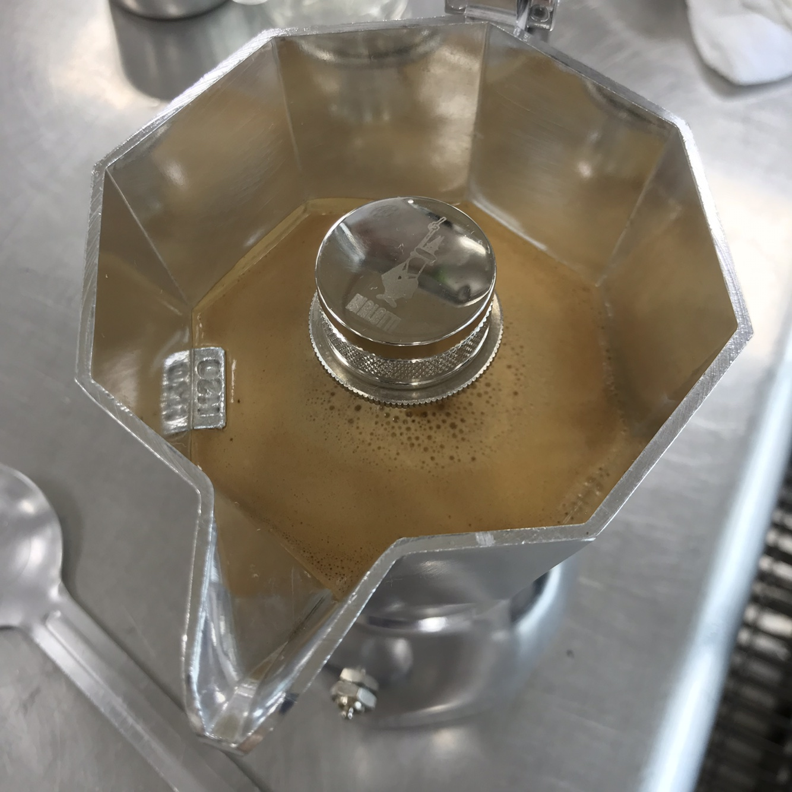
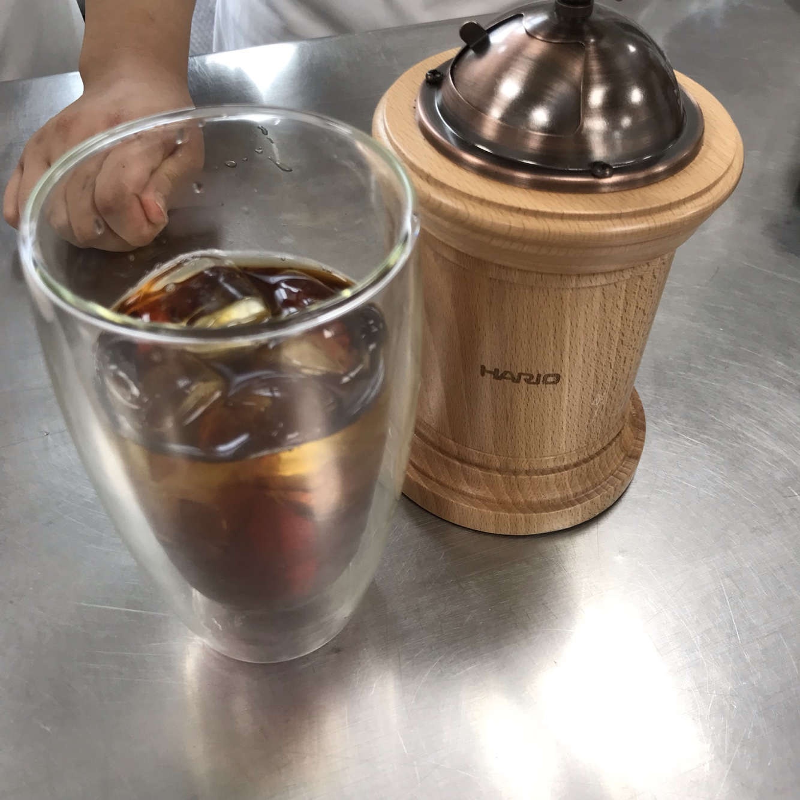
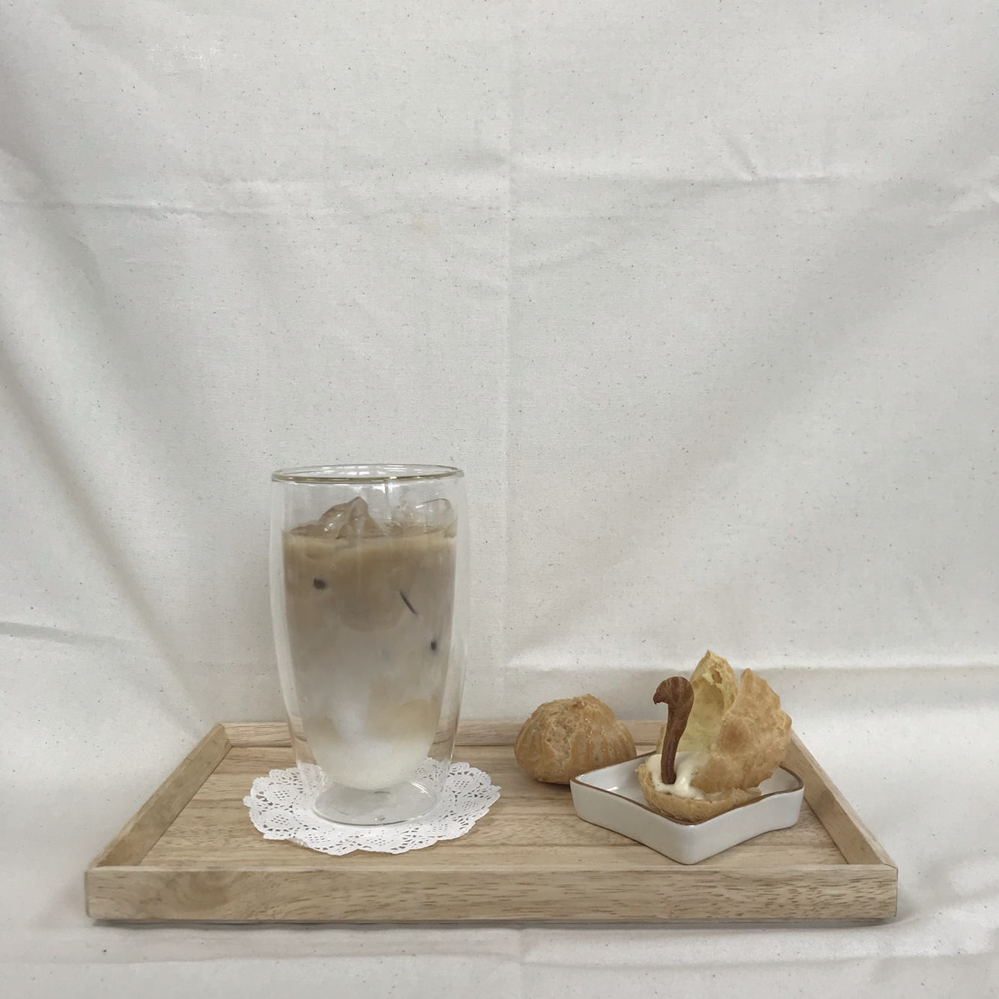

커피(coffee)

커피는 커피나무에서 생두를 수확하여, 가공공정을 거쳐 볶은 후 한 가지 혹은 두 가지 이상의 원두를 섞어 음용하는 기호 음료이다.(출처 : 두산백과)
커피는 레시피에 따라 다음과 같은 종류가 있다.
- 아메리카노
- 콜드브루
- 라떼
이외에도 많은 종류가 있지만 나는 그중에서도 아메리카노와 라떼를 가장 좋아한다.
<아메리카노>
 아메리카노는 쉽게 말하자면 에스프레소에 물을 섞은 커피다.
왼쪽의 사진은 모카포트로 추출한 에스프레소다. 상태가 좋은 원두는 저렇게 크레마가 풍부하게 올라온다.
얼음 물이 담긴 컵에 왼쪽 사진과 같은 에스프레소를 적당량 넣으면 오른쪽 사진과 같은 아이스 아메리카노가 된다.
아메리카노는 단독으로 마셔도 향과 맛이 좋지만, 달콤한 디저트와 함께 먹었을 때 쌉쌀한 맛과 달콤한 맛이 중화되어 그 느낌이 참 좋다.
다음은 아메리카노를 만드는 영상이다.
<아메리카노 만들기>
<라떼>
라떼는 에스프레소에 우유를 첨가한 커피다.
개인적으로 시럽을 넣지 않은 순수한 라떼를 좋아한다. 아메리카노에도 절대 시럽을 넣지 않는다.
라떼는 그것에 무엇을 첨가하느냐에 따라, 어떻게 만드느냐에 따라 새로운 라떼로 변신하는 점이 매력이라 생각한다.
다음은 큐브 라떼를 만드는 영상이다.
<큐브 라떼 만들기>